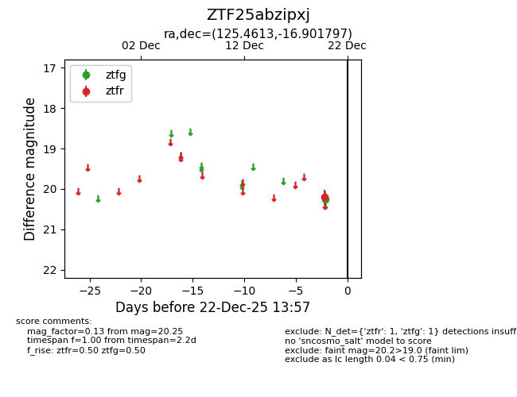
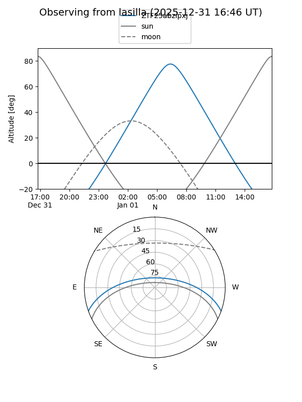
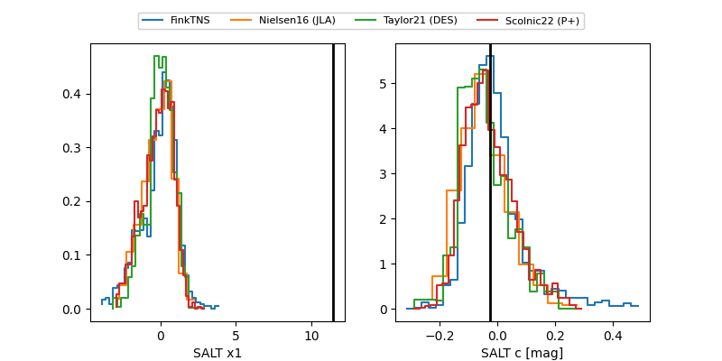

ZTF25abzipxj
Target ZTF25abzipxj at 2025-12-20 11:05
Aliases and brokers:
FINK: fink-portal.org/ZTF25abzipxj
Lasair: lasair-ztf.lsst.ac.uk/objects/ZTF25abzipxj
ALeRCE: alerce.online/object/ZTF25abzipxj
alt names
ZTF25abzipxj (ztf,fink_ztf)
Coordinates:
equatorial (ra, dec) = 125.4613,-16.90180
equatorial (HMS+DMS) = 08:21:50.70,-16:54:06.47
galactic (l, b) = (238.7009,+11.22719)
Flags:
Photometry:
last ztfr=20.20
1 ztfr detections
Lightcurve

Visibility


Additional plots
